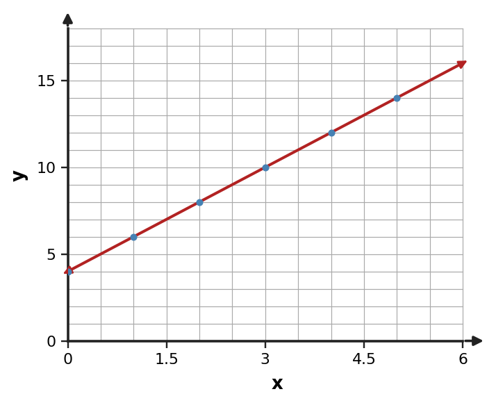
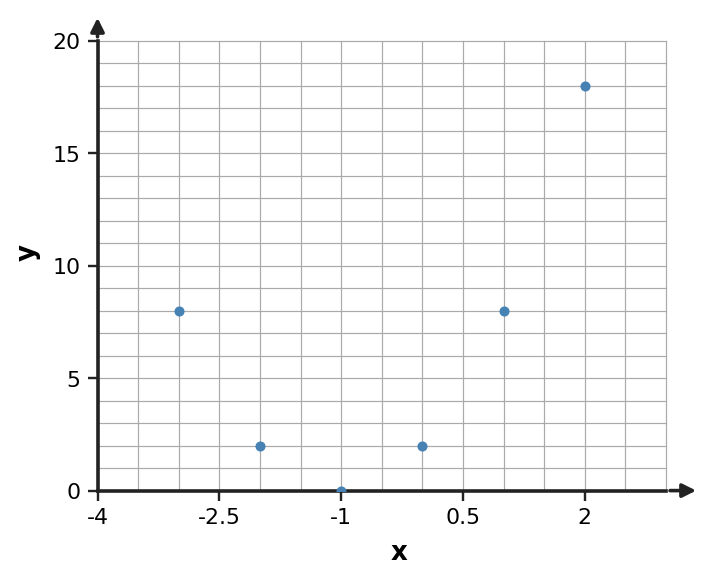

Use the scatterplot shape and the changing pattern to choose a reasonable model family. Give one reason.

Use the scatterplot shape and the changing pattern to choose a reasonable model family. Give one reason.
A linear model is reasonable for the displayed pattern.
A taxi model is $C(m)=4+2.5m$ for $0\le m\le20$. Predict the cost for 8 miles and interpret the result.
A taxi model is $C(m)=4+2.5m$ for $0\le m\le20$. Predict the cost for 8 miles and interpret the result.
$C(8)=24$; the model predicts a 24-dollar cost for 8 miles.
A fitted model describes population count for days 0 through 8. Explain why a prediction at day 80 should be treated cautiously even if the formula can be evaluated. Name one condition that might change outside the observed window.
A fitted model describes population count for days 0 through 8. Explain why a prediction at day 80 should be treated cautiously even if the formula can be evaluated. Name one condition that might change outside the observed window.
Day 80 is far outside the observed/justified domain, so the model assumptions may no longer hold; birth, death, and migration rates could change.
A linear model predicts temperature change over a short controlled interval. State one assumption needed for a constant-rate linear model to remain reasonable, and describe what a violation would look like in the data.
A linear model predicts temperature change over a short controlled interval. State one assumption needed for a constant-rate linear model to remain reasonable, and describe what a violation would look like in the data.
One defensible assumption is that the rate of change remains approximately constant. If it fails, the first differences/rates would stop being approximately constant.
A model predicts $y=2x+3$. For the observed point $(6,14)$, compute observed minus predicted and say whether the model underpredicts or overpredicts.
A model predicts $y=2x+3$. For the observed point $(6,14)$, compute observed minus predicted and say whether the model underpredicts or overpredicts.
The predicted value is $2(6)+3=15$, so observed minus predicted is $14-15=-1$. The model overpredicts by 1.
For data that increase by about 12 units each equal time interval, compare a linear model and an exponential model. Which better matches the stated change pattern and why?
For data that increase by about 12 units each equal time interval, compare a linear model and an exponential model. Which better matches the stated change pattern and why?
Linear, because repeated additive change is modeled by a constant rate; exponential models use multiplicative change.
A linear model fits early measurements, but later first differences increase by about the same amount each step. What model revision should be investigated, and what pattern would support it?
A linear model fits early measurements, but later first differences increase by about the same amount each step. What model revision should be investigated, and what pattern would support it?
Investigate a quadratic model; nearly constant second differences would support the revision.
A savings model is $S(t)=600(1.03)^t$. Interpret 600 and 1.03 in context.
A savings model is $S(t)=600(1.03)^t$. Interpret 600 and 1.03 in context.
600 is the starting amount; 1.03 means a 3% increase per time unit.
Write a linear rule that exactly fits the data, then state the domain represented by the table.
| $x$ | 0 | 3 | 6 | 9 |
|---|---|---|---|---|
| $y$ | 5 | 11 | 17 | 23 |
Write a linear rule that exactly fits the data, then state the domain represented by the table.
| $x$ | 0 | 3 | 6 | 9 |
|---|---|---|---|---|
| $y$ | 5 | 11 | 17 | 23 |
$y=2x+5$; the displayed data use $0\le x\le9$ at the listed inputs.
Choose a model family for the data and state the evidence that supports it.
| $x$ | 0 | 1 | 2 | 3 | 4 |
|---|---|---|---|---|---|
| $y$ | 2 | 5 | 10 | 17 | 26 |
Choose a model family for the data and state the evidence that supports it.
| $x$ | 0 | 1 | 2 | 3 | 4 |
|---|---|---|---|---|---|
| $y$ | 2 | 5 | 10 | 17 | 26 |
Quadratic; first differences are 3, 5, 7, 9, so second differences are constantly 2.
Use the scatterplot shape and the changing pattern to choose a reasonable model family. Give one reason.

Use the scatterplot shape and the changing pattern to choose a reasonable model family. Give one reason.
A quadratic model is reasonable for the displayed pattern.
A delivery model is $C(d)=6+2.5d$ for $0\le d\le12$. Predict the cost for 8 miles and interpret the result.
A delivery model is $C(d)=6+2.5d$ for $0\le d\le12$. Predict the cost for 8 miles and interpret the result.
$C(8)=26$; the model predicts a 26-dollar cost for 8 miles.
A fitted model describes machine output for days 0 through 30. Explain why a prediction at day 365 should be treated cautiously even if the formula can be evaluated. Name one condition that might change outside the observed window.
A fitted model describes machine output for days 0 through 30. Explain why a prediction at day 365 should be treated cautiously even if the formula can be evaluated. Name one condition that might change outside the observed window.
Day 365 is far outside the observed/justified domain, so the model assumptions may no longer hold; maintenance and operating conditions could change.
A linear model predicts cost versus units produced. State one assumption needed for a constant-rate linear model to remain reasonable, and describe what a violation would look like in the data.
A linear model predicts cost versus units produced. State one assumption needed for a constant-rate linear model to remain reasonable, and describe what a violation would look like in the data.
One defensible assumption is that the marginal cost per unit remains approximately constant. If it fails, the first differences/rates would stop being approximately constant.
A model predicts $y=-2x+9$. For the observed point $(3,2)$, compute observed minus predicted and say whether the model underpredicts or overpredicts.
A model predicts $y=-2x+9$. For the observed point $(3,2)$, compute observed minus predicted and say whether the model underpredicts or overpredicts.
Predicted value is 3, so observed minus predicted is -1. The model overpredicts by 1.
A data set has first differences $3,7,11,15$. Compare linear, quadratic, and exponential models. Which family is best supported by this evidence?
A data set has first differences $3,7,11,15$. Compare linear, quadratic, and exponential models. Which family is best supported by this evidence?
Quadratic, because the second differences are constantly 4.
An exponential model fits early measurements, but later ratios stop being constant while the first differences settle at 5. What revision should be investigated?
An exponential model fits early measurements, but later ratios stop being constant while the first differences settle at 5. What revision should be investigated?
Investigate a linear model because the later data show a constant additive change of 5.
A value model is $V(t)=1200(0.85)^t$. Interpret 1200 and 0.85 in context.
A value model is $V(t)=1200(0.85)^t$. Interpret 1200 and 0.85 in context.
1200 is the initial value; 0.85 means 85% remains each time unit, a 15% decrease.
An investment starts at 650 dollars and grows 4% per year. Write an exponential model for its value after $t$ years.
An investment starts at 650 dollars and grows 4% per year. Write an exponential model for its value after $t$ years.
$V(t)=650(1.04)^t$.
For $P(t)=600(1.12)^t$, state the percent change per time unit and whether the model is growth or decay.
For $P(t)=600(1.12)^t$, state the percent change per time unit and whether the model is growth or decay.
12% increase per time unit; exponential growth.
Use $N(t)=40(1.5)^t$ to predict $N(2)$.
Use $N(t)=40(1.5)^t$ to predict $N(2)$.
$N(2)=40(2.25)=90$.
A projectile is modeled by $h(t)=-5(t-4)^2+42$. State the maximum height and when it occurs.
A projectile is modeled by $h(t)=-5(t-4)^2+42$. State the maximum height and when it occurs.
Maximum height 42 at $t=4$.
A profit model is $P(x)=-(x-3)(x-9)$. Find the zeros and interpret them as break-even input values.
A profit model is $P(x)=-(x-3)(x-9)$. Find the zeros and interpret them as break-even input values.
Zeros $x=3$ and $x=9$; those input levels produce zero modeled profit.
A rectangular garden has width $x$ and length $16-x$. Write a quadratic area model and state a reasonable domain.
A rectangular garden has width $x$ and length $16-x$. Write a quadratic area model and state a reasonable domain.
$A(x)=x(16-x)=-x^2+16x$ with $0\lt x\lt 16$.